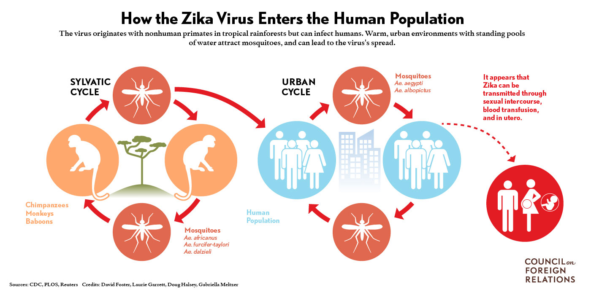

Global Health Concerns
With the Olympics coming up, Rio de Janeiro's problems have been broadcast all over. However, one pertinent problem is the Zika virus which is now spreading. Find out more below.
The Facts
According to the World Health Organization, as of 27 July 2016, 67 countries and territories have reported evidence of mosquito-borne Zika virus transmission
since 2007 (64 of these countries and territories have reported evidence of mosquito-borne Zika virus transmission since 2015). In the United States, cases of Zika are being invesitgated in Utah and Florida and Zika carrying mosquitoes are being found in the southern United States.

A Timeline of Zika
How Zika Spreads

What does Zika do?
Zika can be sexually transmitted and is commonly transmitted by the Aedes aegypti mosquitoes, which live very close to people, and Aedes albopictus mosquitoes, which is more common in the United States.
Zika's symptoms (fever, rash, joint pain, red eyes,and headaches) typically last up to a week. So, people infected usually don't go to the hospital and rarely die of Zika itself.
However, Zika has been linked to microcephaly and Guillain-Barré syndrome. Microcephaly is a condition where a baby’s head is much smaller than expected and it occurs mainly because the baby's brain was not fully developed during pregnancy; of course severe microephaly is a more serious form of this disease.
Children born with microcephaly can suffer seizures, intellectual disabilities, hearing loss, vision problems and difficulties with movement.
Guillain-Barré syndrome (GBS) is an uncommon disease of the nervous system
in which a person’s own immune system damages the nerve cells, causing muscle weakness and paralysis. GBS symptoms include weakness of the arms and legs, and sometimes the muscles of the face that control eye movement or swallowing become weak. The symptoms can last up to several months and although most people
fully recover from GBS, some people have permanent damage, and in 1 out of 20 cases people have died.
Currently microcephaly and Zika have no cure.

What about the Olympics?
The WHO is not preventing spectators from going to Zika affected areas, only asking them to take precautions such as abstaining from sex and using any protection against mosquitoes. One of the main risks in keeping the Olympics and
Paralympics in Rio is further transmitting Zika. Some say that since summer is Rio's dry season, the risk for the spread of Zika is minimal, but Zika doesn't need any more help.